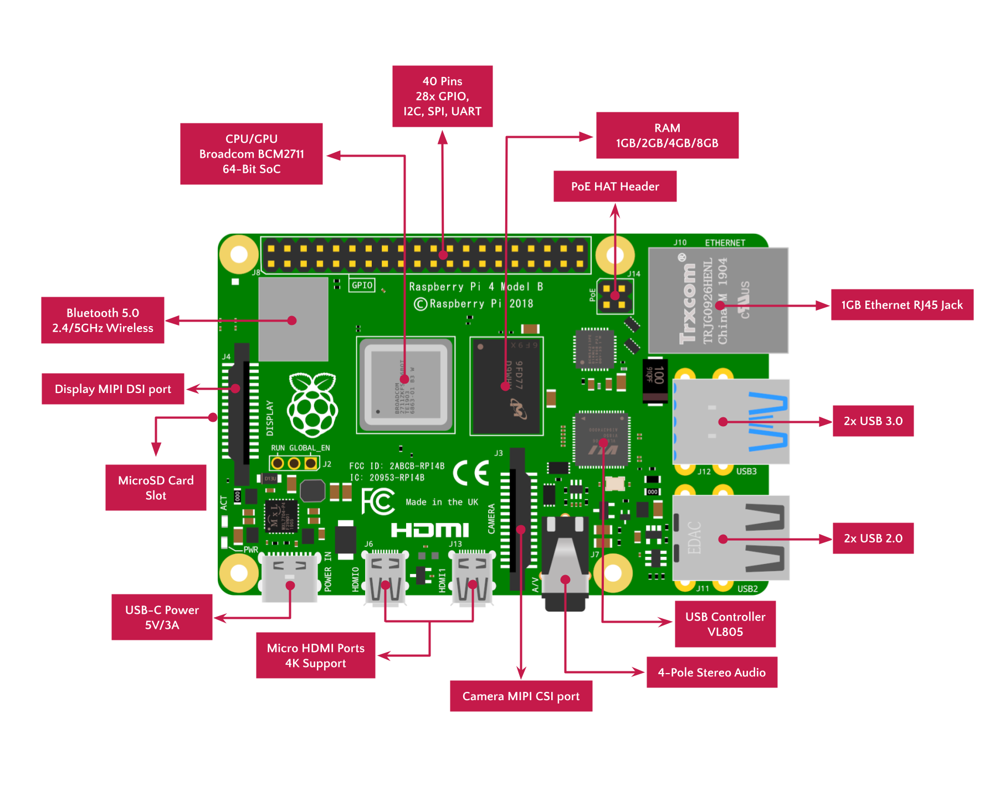

Raspberry Pi - Overview, Setup
Electromos IIT Bhilai Jul 31, 2021
Contributers :Rithvika Pervala, Mrinal Gupta, Chandan Singh, Vivek Shirdhonkar
Table of Contents
Introduction
The Raspberry Pi is a range of one of the most popular Single-Board Computers. It has CPU, RAM, Storage many more functionalities like WiFi, Bluetooth all in just a credit-card sized board. It is low cost and is generally aimed towards learning audience like students and education systems.
As of writing, the Raspberry Pi Foundation has released 13 Single Board Computer models through 3 series (A, B and Zero) since 2012.
Series A
- Lower Cost, Lower Specs
- No Ethernet Port, One
- Less amount of RAM
Series B
- More Cost, Best Specs
- More Components and Ports
- High RAM
Series Zero
- Lowest Cost, Size
- No Ports
- Lowest RAM
However, Embedded Systems are where RPi's true potential is manifested. It's ability to easily communicate with the outside world makes it reliable for wide range of projects and ecosystems. From using it in Astro Pi Space Project to using it in Smart Home Assistance System and Music Projects, Raspberry Pi has deemed itself to be very versatile and user friendly.
Components Overview
Raspberry Pi Model 4B
- The below image describes the Specifications of RPi 4 Model B, the latest product as of writing from the Raspberry Pi Foundation.


RPi 4B key features include a high-performance 64-bit quad-core processor, dual-display support at resolutions up to 4K via a pair of micro-HDMI ports, hardware video decode at up to 4Kp60, up to 8GB of RAM, dual-band 2.4/5.0 GHz wireless LAN, Bluetooth 5.0, Gigabit Ethernet, USB 3.0, and PoE capability (via a separate PoE HAT add-on).
GPIO Pins
- GPIO (General Purpose Input/Output) is the standard interface through which we connect the RPi with sensors and actuators to collect or send data.
- A 40-pin GPIO header is found on all current Raspberry Pi boards.
- GPIO pins - 28
- Ground - 8
- 5V supply - 2
- 3.3V supply - 2
- To get a handy reference for Pin layout, open the RPi terminal and type the following command:
Installation
- Before going any further make sure you have at least the following equipment with you.
Required
Optional
- We will be installing Raspbian Desktop (Now known as Raspberry Pi OS) version on our RPi.
- There are three versions of Raspbian.
- Raspbian Lite : Only CLI, no GUI.
- Raspbian Desktop : Same base with an intuitive GUI.
- Raspbian Full : Similar to Raspbian Desktop, but with more software directly installed.
- The images of all the versions can be found in the official Raspberry Pi Site. You can download the desired image (.iso or .img) files from the site.
Operating system Images - Raspberry Pi
Many operating systems are available for Raspberry Pi, including Raspberry Pi OS, our official supported operating system, and operating systems from
https://www.raspberrypi.com /software/operating-systems/
Flashing
- For Flashing you can either use Balena Etcher or Raspberry Pi Imager.
- Insert a MicroSD card into your Laptop or PC.
Balena Etcher
- Balena Etcher is one of the most widely used tools to burn operating systems files like .iso and .img files to your storage drive to make it a live SD card or a USB flash drive.
- Go to the official Balena Etcher site and download and install Balena Etcher.
- Then open Etcher and select the image, SD Card and then Flash! As simple as that!
Raspberry Pi Imager
- Raspberry Pi Imager is a recently introduced Image Utility created by the Raspberry Community to make the process of flashing Raspbian images on SD Cards easier.
- The Imager can be downloaded from the Software Section of Raspberry Pi site.
- Click on Choose OS and then select Raspberry Pi OS (32-bit). If you're using RPi 4B model, you can also go for 64 Bit Operating Systems.
- Now Click Choose SD card and select your SD card.
- Now click write and then your Raspberry Pi OS is been flashed onto your SD card.
Headless Setup
- Headless RPi is an RPi that operates without Monitor, Keyboard, Mouse.
- We can still access the RPi, provided it is connected to Network - Be it WiFi, Ethernet.
- We can access it using various facilities like SSH (Secure Shell) or VNC (Virtual Network Computing).
SSH
- SSH (Secure Shell) basically allows a remote computer (Your laptop or PC) to connect to the CLI of the Raspbian on the RPi provided both are connected on network.
- If you're using Raspberry Pi Imager, you can also enable and configure your WiFi and SSH (Secure Shell) by pressing ctrl+shift+x .
- To connect to home WiFi connection add a file wpa_supplicant.conf onto the Boot Partition of the flashed SD Card and add the below code in it. Do change the WiFi SSID and Password!
ctrl_interface=DIR=/var/run/
wpa_supplicant GROUP=netdev
update_config=1
country=IN # Your country code in ISO/IEC alpha2 Code
network={
ssid="My_WiFi" # Your WiFi Name
psk="123456789" # Your WiFi password
key_mgmt=WPA-PSK # Pre Shared Key Mode
}
- If you Flashed usingBalena Etcher, you will need to go through the following steps :
- Next, create an empty file and name it as ssh without any extension. This will enable SSH on RPi and we will be able to connect to it from our PC or Laptop.
- After that insert the SD Card and power up the RPi.
- Now from the Remote Computer (Your Laptop or PC), you can SSH into RPi using the Local IP Address of the RPi using mDNS over IPv4 with the following command.
- It will prompt for the User password, enter the default User Password raspberry .
- You will now be able to access the Terminal of RPi.
VNC
- VNC (Virtual Network Computing) basically allows a remote computer (Your laptop or PC) to connect to the whole GUI of the Raspbian on RPi provided both are connected on network.
- For VNC Server setup first of all you'll have to boot your RPi.
- Then open terminal either through Normal Setup or Headless SSH and type the following command to open the Configuration Tools.
- Click on Interfacing Options.
- Then select VNC option and enable the VNC Server on Rpi.

- Finish the process and reboot the RPi.
- Now that we enabled VNC Server on the RPi, we will need a client VNC Viewer on the remote computer to access the RPi.
- For this you will need to download and install VNC Viewer in your PC or Laptop.
- Once installed, open the Viewer and create a New Connection by pressing ctrl+n .
- Type the IP Address of your RPi or just the Hostname (default raspberrypi) if on Local Network in the VNC Server Field.
- You can name it for Friendly Identification as well.
- Once done, click on the newly created connection and the write the username and password of your RPi.
- You will now be able to access the GUI and do everything as if you were using the RPi’s keyboard, mouse, and monitor directly.